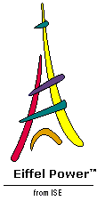

Eiffel Home Page (Web) -- Getting started with Eiffel (local) 

We now look at the overall organization of Eiffel software.
References to ISE-originated libraries appearing in subsequent examples include: EiffelBase , the fundamental open-source library covering data structures and algorithms; the kernel library , a subset of EiffelBase covering the most basic notions such as arrays and strings; and EiffelVision 2 , an advanced graphics and GUI library providing full compatibility across platforms (Unix, Windows, VMS) with native look-and-feel on each.
An Eiffel system is a collection of classes, one of which is designated as the root class. One of the features of the root class, which must be one of its creation procedures, is designated as the root procedure.
To execute such a system is to create an instance of the root class (an object created according to the class description) and to execute the root procedure. In anything more significant than "Hello World" systems, this will create new objects and apply features to them, in turn triggering further creations and feature calls.
For the system to make sense, it must contains all the classes on which the root depends directly or indirectly. A class B depends on a class A if it is either a client of A , that is to say uses objects of type A , or an heir of A , that is to say extends or specializes A . (These two relations, client and inheritance, are covered below.)
The notion of class is central to the Eiffel approach. A class is the description of a type of run-time data structures ( objects ), characterized by common operations ( features ) and properties. Examples of classes include:
 In a banking system, a class
ACCOUNT
may have features such as
deposit
, adding a certain amount to an account,
all_deposits
, yielding the list of deposits since the account's opening, and
balance
, yielding the current balance, with properties stating that
deposit
must add an element to the
all_deposits
list and update
balance
by adding
the sum deposited, and that the current value of
balance
must be consistent with the lists of deposits and withdrawals.
In a banking system, a class
ACCOUNT
may have features such as
deposit
, adding a certain amount to an account,
all_deposits
, yielding the list of deposits since the account's opening, and
balance
, yielding the current balance, with properties stating that
deposit
must add an element to the
all_deposits
list and update
balance
by adding
the sum deposited, and that the current value of
balance
must be consistent with the lists of deposits and withdrawals.
A class
COMMAND
in an interactive system of any kind may have features such as
execute
and
undo
, as well as a feature
undoable
which indicates whether a command can be undone, with the property that
undo
is only applicable if
undoable
yields the value true.
A class
LINKED_LIST
may have features such as
put
, which adds an element to a list, and
count
, yielding the number of elements in the list, with properties stating that
put
increases
count
by one and that
count
is always non-negative.
We may characterize the first of these examples as an analysis class, directly modeling objects from the application domain; the second one as a design class, describing a high-level solution; and the third as an implementation class, reused whenever possible from a library such as EiffelBase. In Eiffel, however, there is no strict distinction between these categories; it is part of the approach's seamlessness that the same notion of class, and the associated concepts, may be used at all levels of the software development process.
Two relations may exist between classes:
You can define a class
C
as a
client
of a class
A
to enable the features of
C
to rely on objects of type
A
.
You may define a class
B
as an
heir
of a class
A
to provide
B
with all the features and properties of
A
, letting
B
add its own features and properties and modify some of the inherited features if appropriate.
If C is a client of A , A is a supplier of C . If B is an heir of A , A is a parent of B . A descendant of A is either A itself or, recursively, a descendant of an heir of A ; in more informal terms a descendant is a direct or indirect heir, or the class itself. To exclude A itself we talk of proper descendant . In the reverse direction the terms are ancestor and proper ancestor .
The client relation can be cyclic; an example involving a cycle would be classes PERSON and HOUSE , modeling the corresponding informal everyday "object" types and expressing the properties that every person has a home and every home has an architect. The inheritance (heir) relation may not include any cycle.
In modeling terms, client roughly represents the relation "has" and heir roughly represents "is". For example we may use Eiffel classes to model a certain system and express that every child has a birth date (client relation) and is a person (inheritance).
Distinctive of Eiffel is the rule that classes can only be connected through these two relations. This excludes the behind-the-scenes dependencies often found in other approaches, such as the use of global variables, which jeopardize the modularity of a system. Only through a strict policy of limited and explicit inter-class relations can we achieve the goals of reusability and extendibility.
An Eiffel class that you write does not come into a vacuum but fits in a preordained structure, shown in the figure and involving two library classes: ANY and NONE .
Any class that does not explicitly inherit from another is considered to inherit from ANY , so that every class is a descendant, direct or indirect, of ANY . ANY introduces a number of general-purpose features useful everywhere, such as copying, cloning and equality testing operations (page 28 ) and default input-output. The procedure print used in the first version of our "Hello World" (page 11 ) comes from ANY .
NONE inherits from any class that has no explicit heir. Since inheritance has no cycles, NONE cannot have proper descendants. This makes it useful, as we will see, to specify non-exported features, and to denote the type of void values. Unlike ANY , class NONE doesn't have an actual class text; instead, it's a convenient fiction.
Classes are the only form of module in Eiffel. As will be explained in more detail, they also provide the basis for the only form of type. This module-type identification is at the heart of object technology and of the fundamental simplicity of the Eiffel method.
Above classes, you will find the concept of cluster. A cluster is a group of related classes. Clusters are a property of the method, enabling managers to organize the development into teams. As we have already seen (section 3 ) they also play a central role in the lifecycle model. Clusters are an organizational concept, not a form of module, and do not require an Eiffel language construct.
The subsequent sections will show how to write Eiffel classes with their features. In an Eiffel system, however, not everything has to be written in Eiffel: some features may be external , coming from languages such as C, C++, Java, C# Fortran and others. For example a feature declaration may appear (in lieu of the forms seen later) as
to indicate that it is actually an encapsulation of a C function whose original name is _ fstat . The alias clause is optional, but here it is needed because the C name, starting with an underscore, is not valid as an Eiffel identifier.
Similar syntax exists to interface with C++ classes. ISE Eiffel includes a tool called Legacy++ which will automatically produce, from a C++ class, an Eiffel class that encapsulates its facilities, making them available to the rest of the Eiffel software as bona fide Eiffel features.
These mechanisms illustrate one of the roles of Eiffel: as an system architecturing and software composition tool, used at the highest level to produce systems with robust, flexible structures ready for extendibility, reusability and maintainability. In these structures not everything must be written in the Eiffel language: existing software elements and library components can play their part, with the structuring capabilities of Eiffel (classes, information hiding, inheritance, clusters, contracts and other techniques seen in this presentation) serving as the overall wrapping mechanism.

Eiffel Home Page (Web) -- Getting started with Eiffel (local)
Copyright Interactive Software Engineering, 2001